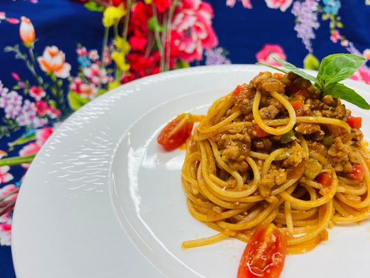

花椰菜去皮切小朵
秋葵修蒂頭
美白菇掰成一朵一朵
番茄不切
黃節瓜1/2滾刀，1/2片，蒜頭切末
鴨胸去多餘的皮、筋膜、血管，且斷筋，皮上斜刀成網狀。
鴨胸調味：皮朝下+少許鹽、黑胡椒原粒（拍碎）、百里香（用手搓一下）、蒜頭、少許油淋在表面
製作過程：
-1/3紅酒、1T糖、洋蔥絲，滾了關小火，快沒汁加一點水，碗公濾汁。
-油，煎鴨胸，皮朝下煎轉小火，兩邊上色
-熱鍋下奶油蒜末爆香後，炒時蔬，雞粉、鹽、迷迭香、黑胡椒粒調味，水淋鍋邊。鴨胸做瞬間加熱，加奶油百里香調味
--最後紅酒醬汁加熱，雞粉鹽調味，玉米粉水調濃稠
第二道肉醬義大利麵 第三道香煎鮭魚佐魚子醬 第四道威靈頓羊排 第五道橙汁南瓜燉飯 第五道西餐廳食譜